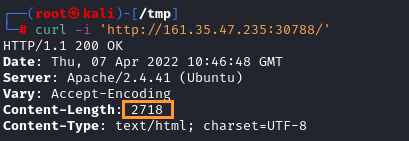
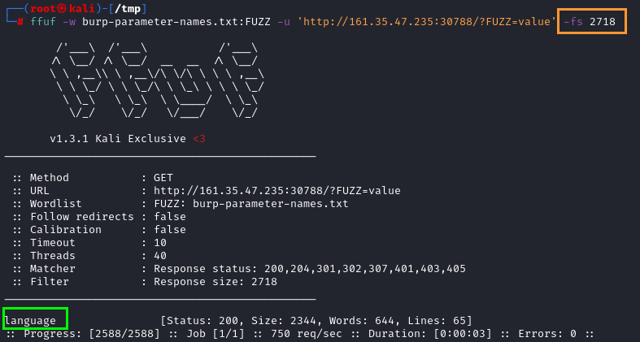
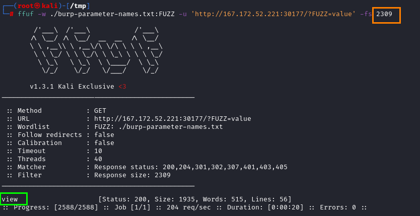

GET Parameters
1. First check which is the normal length of the page in "Content-Length'

2. Check for possible parameters. Use after pages with extension .php, .asp, .aspx that could elaborate them
ffuf -w /usr/share/seclists/Discovery/Web-Content/burp-parameter-names.txt:FUZZ -u 'http://<SERVER_IP>:<PORT>/folder/page.php?FUZZ=value' -fs [normal-content-length-response]
◇ -fs →
filter OUT all the responses of that size [size-response-in-byte]

example 1

example 2:
